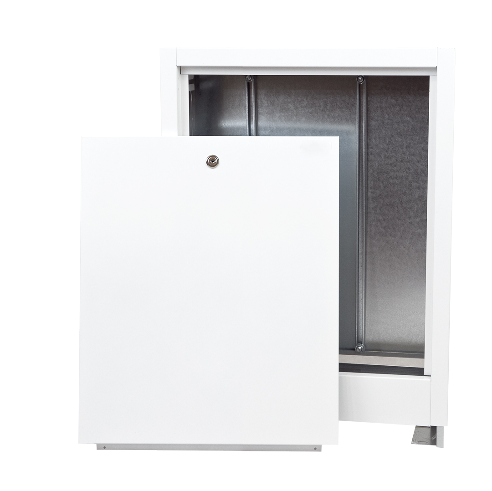

Kuti Shperndarse

Dollapët përdoren për instalimin e kolektorëve të furnizimit me ujë dhe ngrohjes dhe grupeve të pompave të ngrohjes nën dysheme. Kutia është projektuar për t'u montuar në një prerje muri.
Ndertimi:
Muri i pasëm i pajisur me shina dhe vida për montimin e shpërndarësit
Muret anësore me vrima për tubat e furnizimit dhe kthimit të mediumit ngrohës
Këmbët e montimit për dyshemenë dhe vida për montimin e shpërndarësit
Dera e përparme e lëvizshme
Lartësia dhe thellësia e rregullueshme
Dyer standarde të kabinetit me një bravë çelësi
Materiali:Fletë çeliku e zinkuar me zhytje të nxehtë, me trashësi 0,8 mm, e lyer me pluhur me llak të bardhë nr 9008
Produkte Tjera